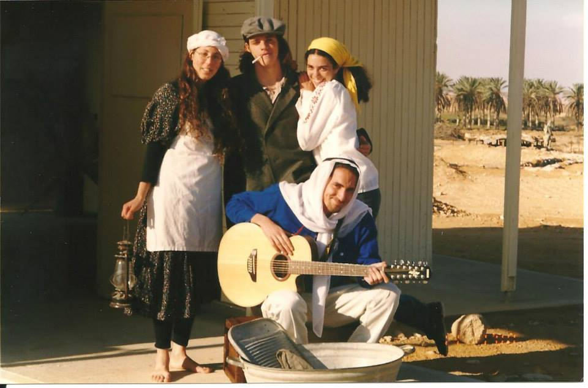

Work experience
-

FLUX, 2014 - present
Founder; Project manager
Our customers are leading educational organizations, like: mindCET, Weizmann institute, Israel Defense Forces,
Joint Distribution Committee Israel, Green Light and MOFET institute.
[site] [edu-games-hub] -
SRM, 2011 - 2015
Life coaching and reflexology therapist. Specializes in family, parenting, kids. -
Razieli kindergraden, 2010 - 2011
Co-founder; Nursery manager -
Personal family, 2009 - 2010
Nanny for a family -

Education
-
Degree in Life Coaching, David Yalin Academic College of Education and Tovanot Institute, 2014
Psychology, coaching, learning methods, motivations to action
Lecturers: Shuli Granit
Expertise in family, parenting, kids.
[site] -
Degree in Professional Reflexology, Reidman School of Holistic Medicine, 2011
Reflexology, medicine, biology, human body
Lecturers: Efrat Goldman
Expertise in diagnostics, motivating to action
[site]
volunteer
-

Nahal group, 1999-2003
Worked at a Kibutz for a year as part of a Nahal group from the Israeli nature conservation society. We organized punlic tours to the nature around us.
Instructed nature after school program to 1st graders.
Special therapy for Cerebral Palsey syndrome and Down syndrome kids.
[israeli nature conservation society]